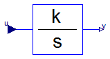
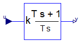

Modelica.Blocks.Continuous.LimIntegrator
Modelica.Blocks.Continuous.LimIntegrator
Modelica.Blocks.Continuous.LimIntegrator
Modelica.Blocks.Continuous.LimIntegrator
Integrator with limited value of the output

This blocks computes y (element-wise) as integral of the input u multiplied with the gain k. If the integral reaches a given upper or lower limit and the input will drive the integral outside of this bound, the integration is halted and only restarted if the input drives the integral away from the bounds.
It might be difficult to initialize the integrator in steady state. This is discussed in the description of package Continuous.
If parameter limitAtInit = false, the limits of the integrator are removed from the initialization problem which leads to a much simpler equation system. After initialization has been performed, it is checked via an assert whether the output is in the defined limits. For backward compatibility reasons limitAtInit = true. In most cases it is best to use limitAtInit = false.
Extends from Interfaces.SISO (Single Input Single Output continuous control block).
| Type | Name | Default | Description |
|---|---|---|---|
| Real | k | 1 | Integrator gain [1] |
| Real | outMax | Upper limit of output | |
| Real | outMin | -outMax | Lower limit of output |
| Initialization | |||
| Init | initType | Modelica.Blocks.Types.Init.I... | Type of initialization (1: no init, 2: steady state, 3/4: initial output) |
| Boolean | limitsAtInit | true | = false, if limits are ignored during initialization (i.e., der(y)=k*u) |
| Real | y_start | 0 | Initial or guess value of output (must be in the limits outMin .. outMax) |
| RealOutput | y.start | y_start | Connector of Real output signal |
| Advanced | |||
| Boolean | strict | false | = true, if strict limits with noEvent(..) |
| Type | Name | Description |
|---|---|---|
| input RealInput | u | Connector of Real input signal |
 Modelica.Blocks.Continuous.Integrator
Modelica.Blocks.Continuous.Integrator
Output the integral of the input signal

This blocks computes output y (element-wise) as integral of the input u multiplied with the gain k:
k
y = - u
s
It might be difficult to initialize the integrator in steady state. This is discussed in the description of package Continuous.
Extends from Interfaces.SISO (Single Input Single Output continuous control block).
| Type | Name | Default | Description |
|---|---|---|---|
| Real | k | 1 | Integrator gain [1] |
| Initialization | |||
| Init | initType | Modelica.Blocks.Types.Init.I... | Type of initialization (1: no init, 2: steady state, 3,4: initial output) |
| Real | y_start | 0 | Initial or guess value of output (= state) |
| RealOutput | y.start | y_start | Connector of Real output signal |
| Type | Name | Description |
|---|---|---|
| input RealInput | u | Connector of Real input signal |
 Modelica.Blocks.Continuous.FirstOrder
Modelica.Blocks.Continuous.FirstOrder
First order transfer function block (= 1 pole)

This blocks defines the transfer function between the input u and the output y (element-wise) as first order system:
k
y = ------------ * u
T * s + 1
If you would like to be able to change easily between different
transfer functions (FirstOrder, SecondOrder, ... ) by changing
parameters, use the general block TransferFunction instead
and model a first order SISO system with parameters
b = {k}, a = {T, 1}.
Example:
parameter: k = 0.3, T = 0.4
results in:
0.3
y = ----------- * u
0.4 s + 1.0
Extends from Interfaces.SISO (Single Input Single Output continuous control block).
| Type | Name | Default | Description |
|---|---|---|---|
| Real | k | 1 | Gain [1] |
| Time | T | Time Constant [s] | |
| Initialization | |||
| Init | initType | Modelica.Blocks.Types.Init.N... | Type of initialization (1: no init, 2: steady state, 3/4: initial output) |
| Real | y_start | 0 | Initial or guess value of output (= state) |
| RealOutput | y.start | y_start | Connector of Real output signal |
| Type | Name | Description |
|---|---|---|
| input RealInput | u | Connector of Real input signal |
 Modelica.Blocks.Continuous.PI
Modelica.Blocks.Continuous.PI
Proportional-Integral controller

This blocks defines the transfer function between the input u and the output y (element-wise) as PI system:
1
y = k * (1 + ---) * u
T*s
T*s + 1
= k * ------- * u
T*s
If you would like to be able to change easily between different
transfer functions (FirstOrder, SecondOrder, ... ) by changing
parameters, use the general model class TransferFunction
instead and model a PI SISO system with parameters
b = {k*T, k}, a = {T, 0}.
Example:
parameter: k = 0.3, T = 0.4
results in:
0.4 s + 1
y = 0.3 ----------- * u
0.4 s
It might be difficult to initialize the PI component in steady state due to the integrator part. This is discussed in the description of package Continuous.
Extends from Interfaces.SISO (Single Input Single Output continuous control block).
| Type | Name | Default | Description |
|---|---|---|---|
| Real | k | 1 | Gain [1] |
| Time | T | Time Constant (T>0 required) [s] | |
| Initialization | |||
| Init | initType | Modelica.Blocks.Types.Init.N... | Type of initialization (1: no init, 2: steady state, 3: initial state, 4: initial output) |
| Real | x_start | 0 | Initial or guess value of state |
| Real | y_start | 0 | Initial value of output |
| Type | Name | Description |
|---|---|---|
| input RealInput | u | Connector of Real input signal |
| output RealOutput | y | Connector of Real output signal |